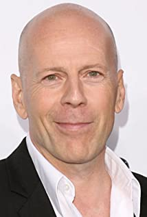

| Personal info | |
|---|---|
| Name: | Bruce Willis |
| Birthdate: | March 19, 1955 |
| Adress: | 123 Hollywood Blvd. CA 45678 USA |
| Phone: | 555-87834376 |
| E-Mail: | bruce.willis@example.com |
Summary
My name is Bruce Willis, an actor and musician born in Idar-Oberstein, West Germany. I’m well known for playing wisecracking or hard-edged characters, often in spectacular action films. One of my most known quotes I think is:
Yippee-Ki-Yay, Motherf*****
Collectively, I have appeared in films that have grossed in excess of $2.5 billion USD, placing me in the top ten stars in terms of box office receipts. I have a total of 141 actor credits, 8 producer credits and 228 credits as myself from various media appearances.
Movies:
- Hard Kill (2020)
- Death Wish (2018)
- Frank Miller's Sin City: A Dame to Kill for (2014)
- RED2 (2014)
- A Good Day to Die Hard (2013)
- The Expendables 2 (2012)
- RED (2010)
- The Expendables (2010)
- Die Hard 4.0 (2007)
- 16 Blocks (2006)
- Sin City (2005)
- Hostage (2005)
- Tears of the Sun (2003)
- The Sixth Sense (1999)
- The Siege (1998)
- Mercury Rising (1998)
- The Jackal (1997)
- The Fifth Element (1997)
- Twelve Monkeys (1995)
- Die Hard: With a Vengeance (1995)
- Pulp Fiction (1994)
- Hudson Hawk (1991)
- Die Hard 2 (1990)
- Die Hard (1988)
Awards:
- Winner: Star on the Walk of Fame for Motion Picture (2006)
- Winner: Primetime Emmy for Outstanding Guest Actor in a Comedy Series, Friends (2000)
- Winner: Blockbuster Entertainment Award for Favorite Actor - Suspense, The Sixth Sense (2000)
- Winner: Blockbuster Entertainment Award for Favorite Actor - Sci-Fi, Armageddon (1999)
- Winner: Blockbuster Entertainment Award for Favorite Supporting Actor - Suspense, The Siege (1999)
- Winner: Golden Globe for Best Performance by an Actor in a Television Series - Comedy or Musical, Moonlighting (1987)
- Winner: Primetime Emmy for Outstanding Lead Actor in a Drama Series, Moonlighting (1985)
- Nominee: Saturn Award for Best Actor, The Sixth Sense (2000)
- Nominee: Saturn Award for Best Actor, Armageddon (1999)
- Nominee: Saturn Award for Best Actor, Twelve Monkeys (1996)
- Nominee: Saturn Award for Best Actor, Death Becomes Her (1993)